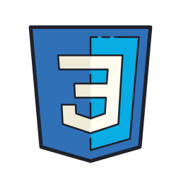
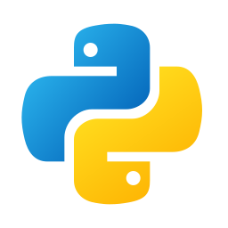

Felipe Molz
- 19
- Marau, RS
- Ciências da Computação
- felipeborbamolz@gmail.com
Bio
Felipe é um estudante apaixonado por tecnologia e inovação. Atualmente cursa Ciências da Computação na Atitus, onde busca expandir seus conhecimentos em desenvolvimento de software e cybersegurança. Nas horas vagas, gosta de ler, estudar e assistir filmes.
Experiência
Servi de auxiliar técnico por 6 mêses. Fazia manutenção e instalação de hardware, instalação de SO e reboot de computadores.
Skills
-

-

- 
- 
-


Certificados
- Web Completo - Cod3r
- Graduate AWS - AWS Academy
- PenTester - Desec Security
- Dev Júnior - Atitus


"Seja como for o que penses, creio que é melhor dizê-lo com boas palavras" - Fulano, 1289 a.C